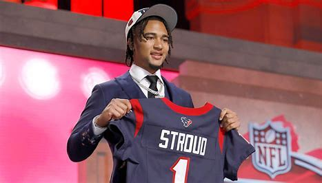
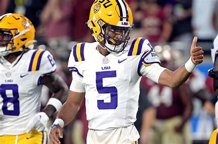

- 49ers- 30 vs. Rams- 23
- Cowboys-30 vs. Jets-10
- Commanders-35 vs. Broncos-33
- Dolphins-24 vs. Patriots-17
- FSU- 31 vs. BC- 29
- Mizzo- 30 vs. KSU- 27
- LSU- 41 vs. Miss St.- 14
- Penn St.- 30 vs. Illinois- 10
About Us
Welcome to my sports scores and recap website! I update the site with new scores and game recaps each week for NFL and College Football games.
If you experience any problems navigating the website, please add a suggestion on the Contact page of the website.
NFL MVP Race
C.J Stroud: Even though he is a rookie, he is playing at such a high level he might win ROTY as well as MVP. He is leading the league in passing yards and is top 5 in passing touchdowns.
Patrick Mahomes: While the Chiefs are not performig how they usually do, Mahomes is still putting up great numbers with a mediocre receiving group.
Tyreek Hill: Hill is having a historic season as a receiver on pace to break multiple records. I would love to see a non-QB win the MVP and I think Hill will be the player to do it.
Heisman Race
Jayden Daniels: With a record breaking year, I think Daniels has the Heisman Trophy on lock this year.
Bo Nix: Nix had a great year as well, being one of the most efficient QBs in college football. His passing stats are on par with Daniels, but Nix just doesn't use his legs like Daniels.
Marvin Harrison Jr.: MHJ is one of the best WR prospects we have ever seen. With average QB play this year he still put up crazy number, but will fall short of the Heisman I fear.
